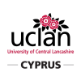

Εισαι μαθητής γυμνασίου ή λυκείου στην Κύπρο? Το Code Cyprus σε προσκαλεί να περάσουμε μια καταπληκτική μέρα, μαθαίνωντας προγραμματισμό μέσα από διασκεδαστικά εργαστήρια με παιχνίδια, βάσεις δεδομένων, ρομπότ και arduino. Επίσης, διασκεδάστε σε ένα μοναδικό Κυνήγι Θησαυρού χρησιμοποιώντας το smartphone σας, και κερδίστε βραβεία!
Για περισσότερες πληροφορίες και δωρεάν εισιτήριο, επισκεφτείτε τώρα το http://codecyprus.org πατώντας το κουμπί πιο πάνω.
Με την χορηγία των:
